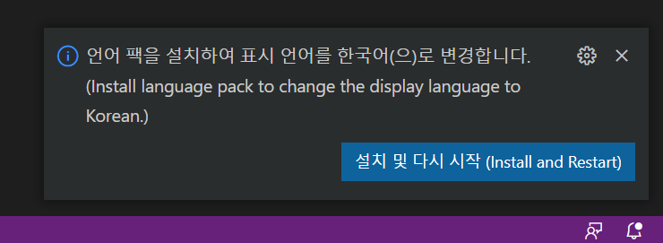

[기본환경] 01 Visual Studio Code 설치(2)_초기환경설정
학습 목표
가. Window 환경에서 Visual Studio Code를 설치 후, 초기 설정을 수행할 수 있다.
학습 내용
가. Visual Studio Code 실행 후, 초기 설정
목차
Visual Studio Code 설치(1)
1-1 기본 프로그램 설치
- 언어팩 설치
- 파이썬 확장팩 설치
- 아나콘다 파이썬으로 연동
1-2 파이썬 실행 확인
1-1 기본 프로그램 설치
[사용 환경]
OS : Window 10
사용 프로그램 : 구글 Chrome 브라우저
사전 설치 프로그램 : 파이썬 프로그램
01 언어 팩 설치
기본 언어가 영어입니다. 그래서 메뉴 등을 한국어로 하려면 언어 팩을 설치해야 합니다. 실행을 하면 한국어 언어팩을 설치할 것인가? 물어봅니다. 설치를 진행합니다. '설치 및 다시 시작'을 선택하면 설치 후, 다시 프로그램이 실행됩니다.

(그림 1-1-1 언어 팩 설치)
만약 처음 실행 시에 해당 '설치 및 다시 시작'이 보이지 않으면, 'Korean Language Pack for Window'을 검색 후, 설치를 진행합니다. 이후 설치 후, 다시 프로그램을 닫고, 실행합니다.
02 아나콘다의 파이썬을 Visual Studio Code의 인터프리터로 연결
파이썬 Extension 설치합니다.
확장 메뉴를 선택 후, 'Python'으로 검색합니다. Python을 선택 후, 설치를 진행합니다.
_files/Image [1].png)
(그림 1-1-2 파이썬 Extension 설치)
이제 설치 후, vscode에서 anaconda의 파이썬을 사용할 수 있도록 인터 프리터를 지정해야 합니다.
CTRL + SHIFT + P를 누릅니다.
이후, python select interpreter라고 검색 후, 해당 메뉴를 선택합니다.
_files/Image [2].png)
(그림 1-1-3 파이썬 인터프리터 선택)
파이썬이 여러가지 선택되어 있으면 여러가지 파이썬 메뉴가 보입니다. 그중에서 아나콘다 python을 선택합니다.
_files/Image [3].png)
(그림 1-1-4 파이썬 인터프리터 선택)
1-2 파이썬 실행 확인
01 파이썬 파일 만들고 실행
새파일을 열고, 파이썬으로 종류를 선택합니다. 이후, 'hello!!!'을 출력하는 코드를 작성합니다.
_files/Image [4].png)
(그림 1-2-1 새 파일 선택)
'Python File'을 선택
_files/Image [5].png)
(그림 1-2-2 파이썬으로 선택)
Hello!!!을 출력하는 코드를 작성 후, 저장합니다.
_files/Image [6].png)
(그림 1-2-3 파이썬 코드 입력)
이후 맨 오른쪽 실행 버튼을 누르면 프로그램이 실행됩니다.
실행 후, 결과를 확인합니다. 화면의 아래에 실행 결과를 확인 할 수 있습니다.
_files/Image [7].png)
(그림 1-2-4 파이썬 코드 실행 결과)